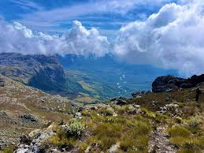
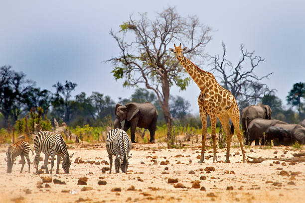
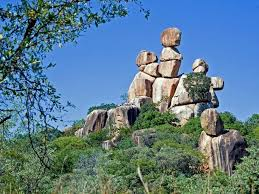
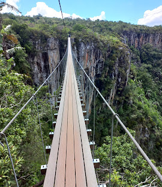

Popular Hiking Trails in Zimbabwe
Popular Hiking Trails in Zimbabwe

Chimanimani Mountains
The Chimanimani Mountains offer breathtaking views and diverse wildlife. This trail features rocky terrain and mesmerizing waterfalls, perfect for adventurous hikers.

Hwange National Park
Known for its large elephant population, Hwange National Park provides a unique hiking experience. Enjoy well-marked trails and an abundance of wildlife.

Matobo National Park
Matobo National Park is renowned for its impressive rock formations and cultural heritage. Hikers can explore ancient rock art and enjoy panoramic hilltop views.

Nyanga National Park
Nyanga National Park offers lush landscapes and scenic trails. Experience the beauty of Mutarazi Falls and hike the highest peaks in Zimbabwe.